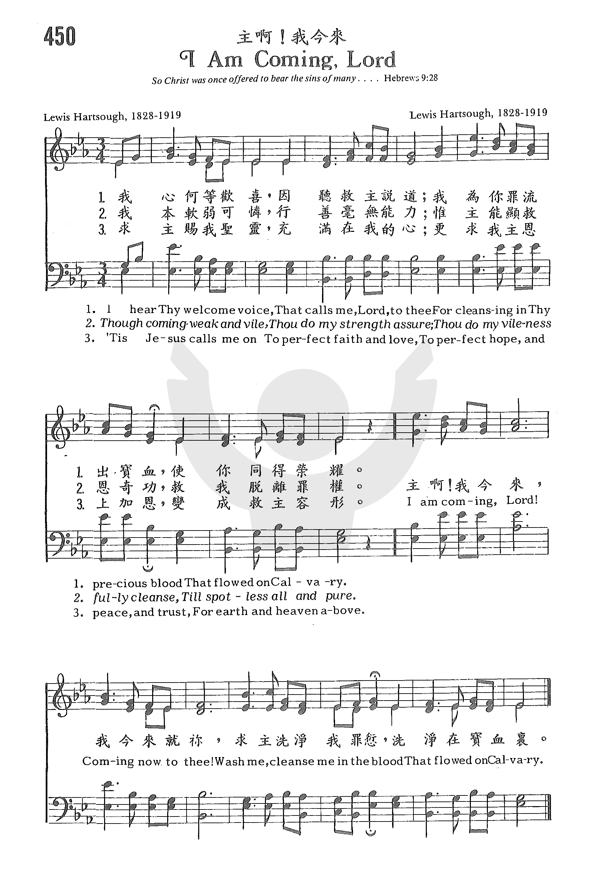

I hear thy welcome voice
|
詩集：頌主聖歌，160 |
|
1 I hear Thy welcome voice,
Refrain:
2 Though coming weak and vile,
3 'Tis Jesus calls me on |
我心何等歡喜，因聽救主說道： 「我為你罪流出寶血，使你同得榮耀。」 我本軟弱可憐，行善毫無能力， 惟主能顯救恩奇功，救我脫離罪權。 救主賜我聖靈，充滿在我心裡， 更救我主恩上加恩，變成救主容形。 美哉贖罪寶血，美哉救世鴻恩， 救主既然如此愛我，我要愛主更深。
|
|
 http://sooopu.com/html/?id=301565
|
|